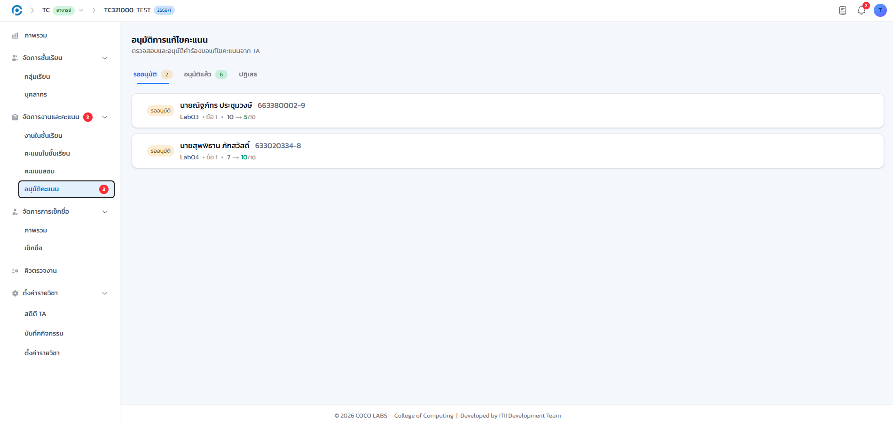
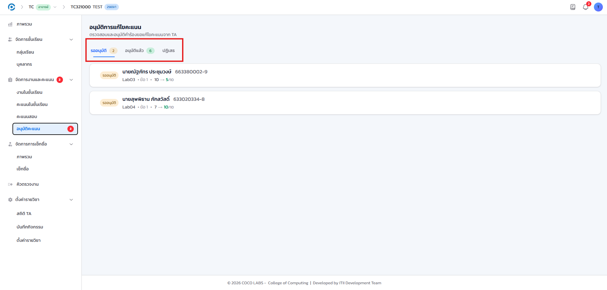
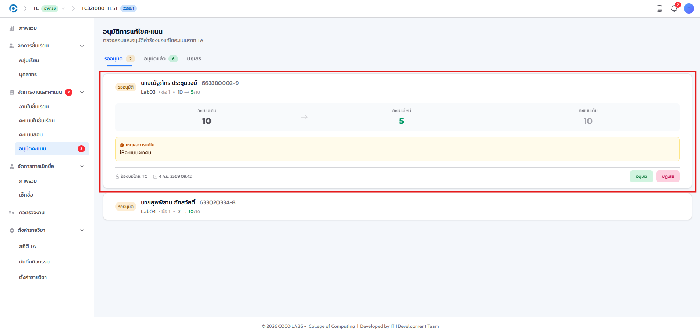
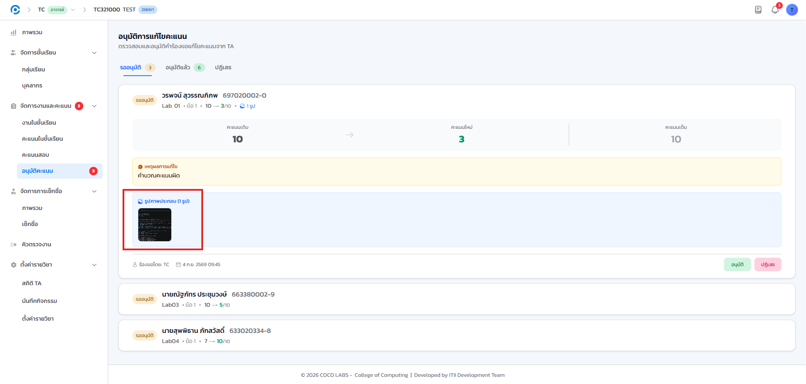
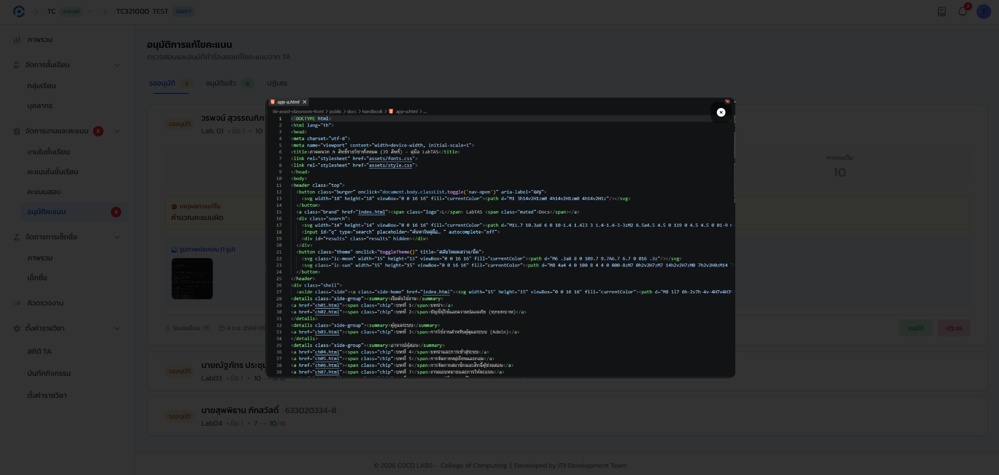
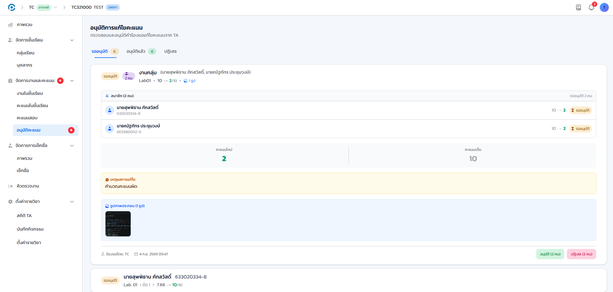
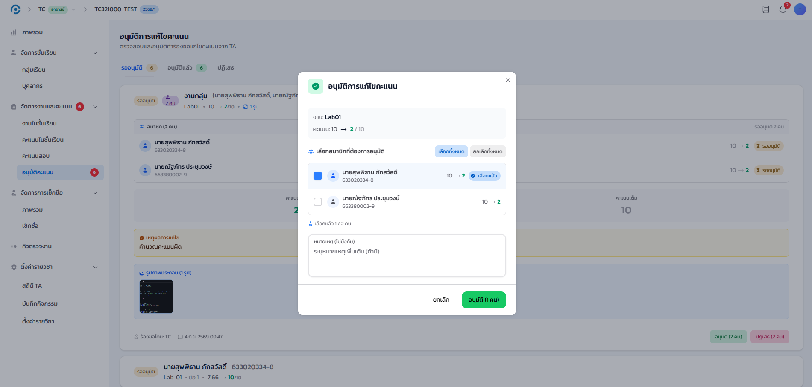
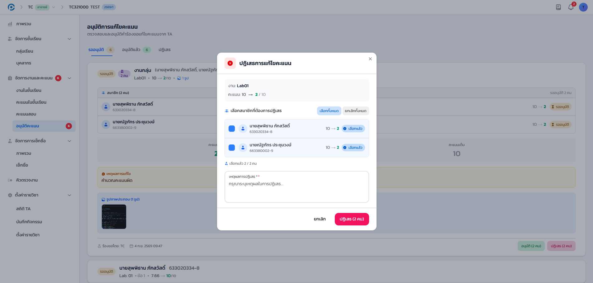

8.1 ภาพรวม#
เมื่อผู้ช่วยสอนต้องการแก้ไขคะแนนที่ให้ไปแล้ว ระบบจะไม่แก้คะแนนให้ทันที แต่จะสร้าง คำขอแก้ไขคะแนน ส่งมาให้ท่านพิจารณาก่อนเสมอ เพื่อให้การเปลี่ยนแปลงคะแนนทุกครั้งมีการตรวจสอบและมีร่องรอยย้อนหลังได้ คำขอแต่ละรายการแสดงคะแนนเดิมเทียบกับคะแนนใหม่ และอาจมีภาพหลักฐานประกอบแนบมาด้วย
การอนุมัติหรือปฏิเสธคำขอทุกครั้งจะถูกบันทึกไว้ในบันทึกกิจกรรมของรายวิชา ทำให้ตรวจสอบย้อนหลังได้ว่าใครแก้คะแนนใด เมื่อใด และด้วยเหตุผลใด (ดูรายละเอียดในบทที่ 13)
8.2 เปิดหน้าอนุมัติคะแนน#
เป้าหมายของขั้นตอนนี้ เข้าสู่หน้าที่รวมคำขอแก้ไขคะแนนทั้งหมดของรายวิชา ซึ่งเป็นจุดเริ่มต้นของทุกการทำงานในบทนี้
- เข้าเมนู จัดการงานและคะแนน แล้วเลือก อนุมัติคะแนน หากมีคำขอค้างพิจารณาอยู่ เมนูจะแสดงตัวเลขกำกับจำนวนไว้

- แท็บ "รออนุมัติ"
- คำขอที่ยังไม่ได้ตัดสินใจ เป็นแท็บที่ระบบเปิดให้อัตโนมัติเมื่อเข้าหน้านี้
- แท็บ "อนุมัติแล้ว"
- คำขอที่ท่านอนุมัติไปแล้ว คะแนนถูกปรับตามคำขอเรียบร้อย
- แท็บ "ปฏิเสธ"
- คำขอที่ท่านปฏิเสธไป พร้อมเหตุผลที่บันทึกไว้

8.3 อ่านคำขอและหลักฐานประกอบ#
เป้าหมายของขั้นตอนนี้ ตรวจสอบรายละเอียดของแต่ละคำขอให้ครบก่อนตัดสินใจอนุมัติหรือปฏิเสธ
- ชื่อนักศึกษาและงาน
- งานมอบหมายและข้อที่ขอแก้ไขคะแนน
- คะแนนเดิม → คะแนนใหม่
- แสดงเทียบกันให้ตรวจสอบได้ทันที เช่น 10 → 5
- ผู้ยื่นคำขอและเหตุผล
- ชื่อผู้ช่วยสอนที่ยื่นคำขอ พร้อมเหตุผลที่ระบุ

ผู้ช่วยสอนแนบภาพหลักฐานประกอบคำขอได้ เช่น ภาพกระดาษคำตอบที่ตรวจใหม่ หากมีภาพแนบมา การ์ดจะแสดงภาพย่อกำกับไว้

- คลิกภาพย่อหลักฐาน เพื่อดูภาพเต็มขนาดก่อนตัดสินใจ

คำขอไม่จำเป็นต้องมีภาพหลักฐานแนบมาเสมอไป เนื่องจากเป็นช่องไม่บังคับฝั่งผู้ช่วยสอน หากคำขอไม่มีภาพแนบ ให้พิจารณาจากเหตุผลที่ระบุไว้แทน
8.4 คำขอที่มาจากการให้คะแนนเป็นชุด (Batch)#
เป้าหมายของขั้นตอนนี้ พิจารณาคำขอหลายรายการที่เกิดจากการแก้ไขคะแนนครั้งเดียวของผู้ช่วยสอน โดยเลือกอนุมัติได้เฉพาะบางคนในกลุ่ม
เมื่อผู้ช่วยสอนแก้ไขคะแนนของนักศึกษาหลายคนพร้อมกันในการกระทำเดียว ระบบจะจัดกลุ่มคำขอที่เกิดจากการกระทำเดียวกันไว้ในการ์ดเดียวแบบเปิด/ปิด (accordion) โดยอัตโนมัติ แทนที่จะแยกเป็นการ์ดย่อยทีละคน

- คลิกหัวการ์ดเพื่อขยายดูรายชื่อนักศึกษาทั้งหมดในกลุ่ม
- ทำเครื่องหมายเลือกเฉพาะนักศึกษาที่ต้องการอนุมัติ ไม่จำเป็นต้องเลือกทั้งหมด

การอนุมัติกลุ่มไม่ใช่การกระทำแบบทั้งหมดหรือไม่มีเลย ท่านเลือกอนุมัติเฉพาะบางคนในกลุ่มได้ ส่วนคนที่ยังไม่ได้เลือกจะยังค้างอยู่ในแท็บ "รออนุมัติ" ตามเดิม ไม่ถูกอนุมัติหรือปฏิเสธไปพร้อมกันโดยอัตโนมัติ
8.5 อนุมัติหรือปฏิเสธคำขอ#
เป้าหมายของขั้นตอนนี้ ตัดสินใจขั้นสุดท้ายต่อคำขอแต่ละรายการหรือรายการที่เลือกไว้ในกลุ่ม
- หากเห็นด้วยกับคำขอ คลิก อนุมัติ คะแนนของนักศึกษาจะถูกปรับเป็นค่าใหม่ตามคำขอทันที
- หากไม่เห็นด้วย คลิก ปฏิเสธ แล้วกรอกเหตุผลในกล่องที่ปรากฏขึ้น ก่อนคลิกยืนยัน

คำขอที่อนุมัติหรือปฏิเสธจะย้ายไปอยู่ในแท็บนั้นทันที และคะแนน (กรณีอนุมัติ) จะปรับตามคะแนนใหม่ที่ระบุไว้ในคำขอ โดยไม่ต้องเข้าไปแก้ไขคะแนนซ้ำในหน้ารายชื่ออีก